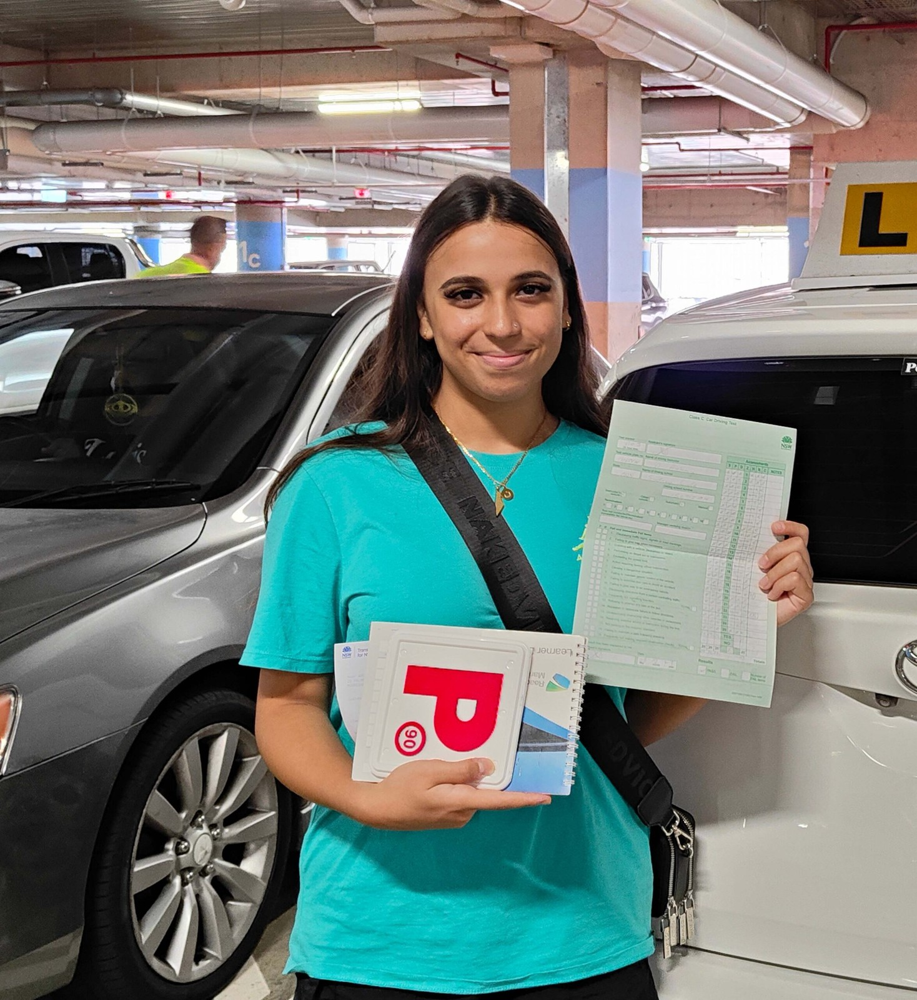
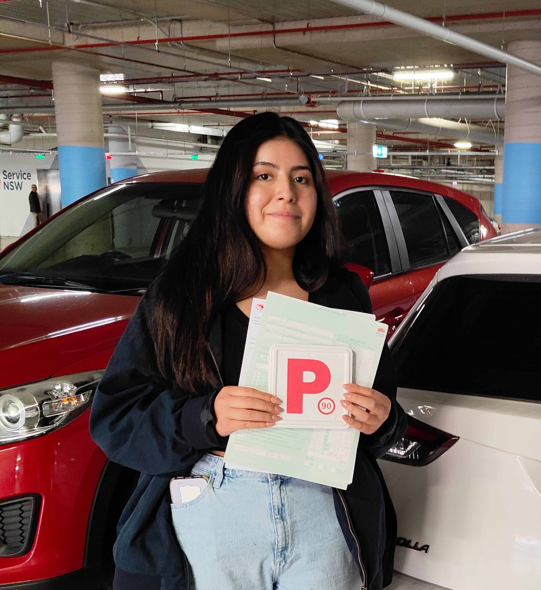

Driving Lessons Edmondson Park
Driving lessons in Edmondson Park that build confidence before test day
Automatic lessons with Ashraf George for beginners, nervous drivers, adult learners and local Liverpool test preparation across Edmondson Park and nearby suburbs.

Best for
Beginners, nervous learners, adults returning to driving, and Liverpool test preparation.
Current Offers
Perfect for beginners
One Hour Lesson
$80 One hour lesson on an automatic car, including pick-up and drop-off. Book LessonMost popular
Two Hour Lesson
$150 Two hour lesson on an automatic car, including pick-up and drop-off. Book LessonSave $30
5 Hour Lessons Package
$370 Five hour lessons package, including pick-up and drop-off. Buy PackageBest value
10 Hour Lessons Package
$700 Ten hour lessons package, including pick-up and drop-off. Buy Package
Quick answers
What people usually want to know about driving lessons in Edmondson Park
This section answers the main questions directly before the page moves into lesson details, local context and booking options.
Do you offer lessons in Edmondson Park?
Yes. Lessons are available across Edmondson Park and nearby suburbs including Prestons, Horningsea Park, Denham Court, Leppington, Casula and Liverpool.
What type of car is used?
Lessons are delivered in a dual-controlled, fully insured automatic vehicle, which suits beginners, nervous learners and local driving test preparation.
Can you help with test preparation?
Yes. Lessons can include local route work, mock tests, parking practice, roundabouts, observation routines and the traffic conditions learners may face around Liverpool.
How do I book?
You can book online through Appointy or call (02) 8776 1815 to organise a lesson time that fits school, work or family schedules.
Local lesson structure
Driving lessons in Edmondson Park that match your stage, pace and local roads
If you are just starting out, rebuilding confidence after a break, or getting ready for the Liverpool test environment, your lessons should feel organised from the first session. Each lesson focuses on the skill that matters next, whether that is moving off safely, steering control, lane positioning, parking, roundabouts, speed management, observation checks or mock test preparation.
Lessons are planned around the roads learners actually use in and around Edmondson Park. That can include quieter practice areas for first-time drivers, more active traffic exposure near connecting local roads, and structured preparation for the conditions students face on the way to licence testing in Liverpool.
- One-on-one automatic driving lessons in a dual-controlled vehicle
- Clear lesson progression for beginner, intermediate and test-ready learners
- Flexible sessions for school students, university schedules, shift workers and adults returning to driving
- Local knowledge across Edmondson Park, Prestons, Denham Court, Leppington, Casula and Liverpool

How lessons work
What to expect from the first booking through to test day
Students do better when they know what happens next. The lesson process is simple, structured and adjusted to the learner’s current stage.
Book your lesson
Choose a time online or call directly if you want help selecting the right starting point for a beginner, adult learner or test-ready student.
First lesson assessment
The first session identifies confidence level, current habits and the next skills that need attention so the learner is not guessing.
Structured local practice
Lessons build from quieter roads into more demanding conditions as the learner improves steering, observation, lane discipline and road judgement.
Mock tests and final preparation
When test day gets closer, lessons shift toward consistency, route awareness, manoeuvres and the small details that often affect the final result.
Who these lessons suit
Best fit for learners who want proper guidance, not rushed seat time
Driving lessons in Edmondson Park are most useful when the learner wants a real plan, local knowledge and steady improvement from one session to the next.
Good fit
- Teen learners starting their logbook hours
- Parents wanting a calm, structured instructor for their child
- Adult learners who need confidence before driving alone
- Overseas licence holders adapting to local road rules and test expectations
Common goals
- Build safe habits from the first lesson
- Improve parking, roundabouts and lane awareness
- Prepare properly for Liverpool test routes
- Learn local roads without being overwhelmed
Not the right fit
- Students looking for a rushed last-minute lesson with no structure
- Learners who only want a car for test day without practice
- People expecting made-up pass-rate promises or pressure sales tactics
Who we serve
Support for teen learners, parents, adult students and overseas licence holders
Edmondson Park and the surrounding South West Sydney area includes school students, working adults, migrant families and learners with very different levels of confidence. Some students need a slow first lesson and a calm instructor. Others already drive but need route-specific test preparation and cleaner habits before a Liverpool booking.
- Teen learners building logbook hours and confidence
- Parents wanting a patient, safety-first instructor
- Adults learning later in life or returning after years off the road
- International and overseas licence holders adapting to NSW road conditions

Lesson coverage
What is covered during Edmondson Park driving lessons
Each lesson is adjusted to the learner, but the structure stays practical and focused on safe progress.

Beginner lesson planning
Start with car controls, moving off, steering, braking, mirrors, scanning and calm low-pressure practice.

Nervous driver support
Lessons are broken into small steps so anxious learners can repeat each skill until it feels steady and familiar.

Parking and manoeuvres
Reverse parking, kerbside parking, turns, observation checks and space judgement are practised with clear feedback.

Driving test preparation
Local route preparation focuses on observation, hazard awareness, school zones, intersections and calm decision-making.
Lesson packages
Flexible lesson options for Edmondson Park learners
Choose a simple one-off lesson, a longer practice session or a package that supports consistent local progress.
One Hour Lesson
Best for a focused weekly lesson, a confidence reset or specific skill practice.
$80
Good for beginners and local route top-ups.
Book lessonTwo Hour Lesson
More time for local roads, multiple manoeuvres and deeper feedback in one session.
$150
Useful before a test or after a long break from driving.
Book lesson5 Hour Package
For learners who want consistent weekly progress and a clearer short-term plan.
$370
Often suits nervous learners and parents organising a block of lessons.
Buy package10 Hour Package
Built for steady habit-building, route work and broader test preparation.
$700
Helpful when the goal is solid preparation, not rushed last-minute practice.
Buy packageReal feedback videos
Watch real learner feedback.
See how local learners built confidence, improved their driving and got ready for their test.

Local route knowledge
Edmondson Park lessons shaped around the roads learners actually face
Students do better when practice matches the local driving environment. Lessons can gradually move from quieter residential roads into more complex conditions around Edmondson Park and the Liverpool area so students are not surprised by traffic flow, lane choices or common test-day pressure points.
- Quiet starts for beginners before moving into busier local roads
- Practice around Edmondson Park, Prestons, Horningsea Park, Denham Court and Leppington
- Progression into higher-decision areas linked to Liverpool test preparation
- Parking, roundabouts, lane discipline, hazard awareness and observation routines
Local context
Why local driving lessons matter around Edmondson Park
Learning to drive in South West Sydney means dealing with a real mix of road conditions. New estates, school traffic, roundabouts, lane merges, shopping precinct access and faster connector roads all ask for different judgement. Lessons that stay close to the local area help learners build familiarity before the pressure of test preparation increases.
Local familiarity first
Early lessons can stay closer to quieter areas so the learner gets used to the car, mirrors, speed control and scanning before busier traffic is layered in.
Transition into busier roads
As confidence improves, students can work into the wider Edmondson Park and Liverpool road environment where lane choice, timing and hazard awareness matter more.
Better preparation for real driving
The goal is not just passing one test. It is to help learners become safer, steadier drivers on the roads they will keep using after they get their licence.
Trust and teaching approach
Safe, local and structured from the first lesson
Ashraf George teaches with a long-term view. The aim is not to squeeze learners through one test, it is to help them build habits that still serve them years later when they are driving on their own across Liverpool and South West Sydney.
Government-accredited instruction
Lessons are delivered by a recognised instructor with current accreditation, compliant training standards and dual-controlled, fully insured automatic vehicles.
Calm lessons with less wasted driving
Eco values on this page mean practical efficiency, not slogans. Lessons are planned around local routes and skill goals so time, fuel and learner energy are not wasted on random driving.
Real reassurance for parents and adults
Parents, first-time learners and adult students can book knowing the instructor is police checked, Working With Children checked and focused on safe, repeatable habits.


Service area
Areas around Edmondson Park we regularly cover
Lessons can be arranged across the wider local catchment for students who want a familiar instructor and continuity as they build experience on nearby roads.
Our accreditation and memberships
Trusted teaching standards and recognised learner-driver credentials.
Recognised instructor associations, NSW learner-driver program badges and screening credentials that support trust for students and parents.
Australian Driver Trainers Association
Industry association badge showing professional membership within the Australian driver trainer sector.
NSW Government Accredited
NSW Government accreditation badge signalling recognised standards for approved instruction services.
Working with Children Check
NSW Office of the Children's Guardian screening badge for work involving children and younger learners.
Transport for NSW
Transport for NSW badge reflecting alignment with current NSW road rules and learner-driver requirements.
New South Wales Safer Drivers Course
Official Safer Drivers Course program badge connected with hazard awareness and lower-risk learner driving habits.
NSW Police Force National Police Check
Police check trust badge confirming background screening and adding reassurance for students and parents.
FAQ
Questions about driving lessons in Edmondson Park
How much do driving lessons in Edmondson Park cost?
Current lesson options start from $80 for one hour and $150 for two hours. Packages are available at $370 for 5 hours and $700 for 10 hours, which can suit learners who want consistent weekly progress.
Do you offer automatic driving lessons?
Yes. Lessons are provided in fully insured, dual-controlled automatic vehicles. This works well for beginners, nervous learners, adult students and most local driving test preparation.
Can adults and overseas licence holders book lessons?
Yes. Many students are adults returning to driving, people who did not learn as teenagers, or drivers adjusting to NSW road rules and local test expectations.
Do lessons help with Liverpool driving test preparation?
Yes. Lessons can include structured practice around local traffic conditions, manoeuvres, observation routines, lane selection and mock test sessions connected to the Liverpool test environment.
How many lessons will I need before my test?
That depends on your starting point, confidence, recent driving exposure and how consistently you practise. The first lesson usually makes the next-step plan clearer.
Book your first lesson
Need driving lessons in Edmondson Park with a calmer, more structured approach?
Book a first lesson with Ashraf George if you want local guidance, a clear plan and practical support that helps you feel more settled behind the wheel.